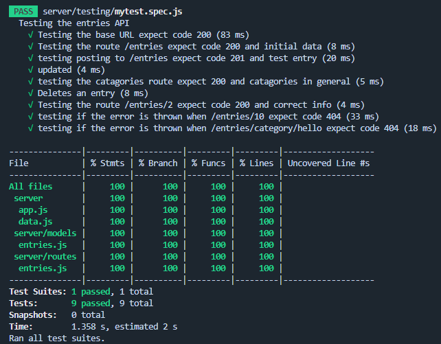

When people vent, they may not need a verbal response. They want someone to listen. For a moment, stop and think about the last time you actual felt heard; give others a comment and emoji.
Vent to Prevent.
Become a Preventer.
Why venting is good for you
One of the main reasons why we vent is to reduce our stress levels. Rime (2009) states that disclosing stress is a coping mechanism. Venting is a 2-way process: the person venting and the person hearing the vent. ...As a matter of fact, positive venting can reduce stress, but negative venting can lead to heightened stress and physical health concerns. It is not just about the person venting, but equally important, the person who is hearing the vent. Research has shown that the difference between positive and negative venting can be focused on the ways in which the person hearing the vent responds, both through speech and action (Bodie et al., 2015; Goldsmith, 2004) . This research supports numerous counseling theories and models that focus on active listening, empathy, and safety.
Documentation
PREVENTERS present preVent
The task set out to us was to create a comunity journaling website, that anyone can make a post and be able to comment and react to posts.

Installation & Usage
Installation
- Clone or Download this repo
- navigate to this folder
- use the commands: npm i
Usage
Technologies
- Express: implement our entries API
- Nodemon/Node: running the API
- Anime.js: Javascript animation for front-end
- TypeIt.js: Typewriter effect used on front-end
- Netlify: Deploying preVent website from the repo
- Heroku: Used for hosting the API platform
- Jest and supertest: testing API routes and models on back-end
- Loader.io: testing load on front-end
Process
The idea
Intially we wanted a website like twitter where you could just rant and get things off your chest, from this we found a website called muttr which was just for ranting but realised this would create a very negative enviroment. We wanted it to be a constructive enviroment, to achieve this we wanted inspirational quotes to try an inspire our clientel. We have also implemented a rudimental filtering system to disallow certain words to be posted.
Psychology behind preVent
Why venting is good for you
- We vent to reduce our stress levels (disclosing stress is a coping mechanism as established by Rime (2009) - venting is a two way process with the person venting and the person hearing the vent.
Why we need this app
- This application allows you to vent in two ways: users being able to make posts and other users being able to read through these posts and make comments.
Functionality
For the design of the project we took the user specifications and segmeted them into system requirements. For this we created a google doc for everyone to just write down their ideas and then collate them into a list of steps and tasks to be completed.
Requirements
User will be able to make an anonymous post
- Create a post
- Text box for user to input characters, capped at a maximum number of characters
- Gif button on the “create post” to access giphy and add a gif into the post
- Post button for user to create the post and push into the dataset
- Will include data and time of post
- Create categories for the user posts
- Filter certain words; slurs etc - to keep app ethical
User will be able to use emojis (at least 3) to rate their post
- Emojis available under every post for users to react to posts by clicking the emoji
- User should be able to react using all available emojis
- Each emoji will have a reaction count to see how many other users have reacted
- The emojis will be a pop up bubble - make it clean looking (like the message reactions)
User will be able to input 400 characters for each post
- After 400 characters, the user will get an error message
- Event listener for each key stroke and then get the length of the input string
- Replacing names on posts with fun aliases
Users will be able to use giphy to add gifs/images to post
- A search bar within the create post block to allow users to search for specific gifs in the giphy api
- All gifs will be resized to fit the post block
Users can view other people’s posts
- Fetching posts
- Timeline page so on the main page - you can see all the posts made by other users
- Create a card that can be reused for every post
Mindful quote
- After user creates post, the app takes them to a random quote based on the category
User must be able to comment on other people’s journal entries
- Replies to posts which will also be capped at a maximum character length
Users will be able to rate their mood
- Users will rate their post with an emoji when they post it; this will allow others to see their mood before even reading their post (creating ease of use).
Two ways to create comments?
- Create comment on the same page where the comment box is unhidden and expanded
- Click into post (redirect to post only, displayed with comments)
Design
To design the page we looked at many different websites that we thought of that have already had success in the community industry. We took inspiration to do this we made a list of likes and dislikes.
Muttr
- Likes:
- Like the way you can make anonymous posts
- How the posts are structured on the page: running timeline of posts
- Categorisation of the posts
- Calming colours used for application
- Dislikes:
- Certain categories on this website makes it harder to approach meaning the audience it is targeted at is too varying; swearing etc is allowed on this application - this might put people off from venting as they read through other people’s posts.
- Also, the application doesn’t allow users to “journal” anymore - it seems to have become a hub for troll posts - we have to create “prevention” methods.
- Venting is a two way process and unfortunately Muttr does not cater to this despite being a place to vent. What is different: Our application will filter out certain words making it more usable and ethical for all ages.
- Likes:
- Has a character cap on each tweet to prevent posts from being too long, clean and intuitive GUI
- Dislikes:
- Very unfiltered, users can post anything.
- Does not really have clear-cut categories of users posts
- What is different:
- We will filter out certain words to make sure it is more user-friendly for all ages,
- Each post will have a category selection so users are able to filter through posts
Tumblr
- Likes:
- Blog style app, that allows different media to be posted
- Allows users to “create their own site”
- Has a reblogging functionality
- Dislikes:
- Not anonymous
- Shows the number of likes and reblog - can cause damage to mental health, long post
- Likes:
- It has a huge number of threads that can be used for venting
- The commenting system
- Upvoting and downvoting
- Dislikes:
- Doesn’t have emojis
- Is not fully anonymous
- Lawless, no filter
Dalio
- Likes:
- You can set your mood and people you are with
- Monitor daily mood swings
- Dislikes:
- Not really a journal, as you can’t write much
- Not anonymous
Backend
Creating the post API
To create the API we used express, nodemon/ node. We created the data to be able to handle all the data that the post could have:
userEntries = [
{
id: 1,
gif: "",
category: "",
entry: "",
emoji: {
happy: 0,
amused: 0,
shocked: 0,
angry: 0,
sad:0
},
dnt: "",
comments: []
}
]
We created a model and routes for this data, allowing for creating, read, update and delete. We created routes for /entries and for /entries/category allowing for us to easily access all the data and to filter by id and category.
As we seperated into backend and frontend teams, the backend team created a test client with a single card that had full functionality with the post API and giphy API. This was to make it easy for process of combining the frontend and backend.
During this the backend team also made a test suite that had 100% coverage for the API.

Frontend
We created the pages of the website using HTMl and used a combination of vanilla CSS and Javascript to style and add animations and intreactive elements to the pages.
For the homepage we used TypeIt.js to create a typewriting effect, making the page much more interesting.
The vents page, contains all the posts for our app in the form of cards in a masonary grid layout, inspired by the popular journaling app, Tumblr. The cards would pull data from the api and create new cards as posts are added. You can also comment on ech post, and the cards will display the newest three commments. In addition, they can also react to the post with an emoji, whcih will also count the number of reactions it has recieved. We also have a card that retrieves motivational quotes from an API. We also used anime.js to make the transitions on the page much smoother.
On the nav bar; we also have a filter option as dropdown menu, which will filter out the data based on their category. There is also a pop-up window for new post entries. Here, you can choose a gif from the GIPHY API to go with your post.
Lastly is the Preventers page, which simply tells you more about the group and the purpose of the website. All pages have a mark mode function, that turns color scale to grey.
Combine
Combining the frontend and backend was a massive task. Implementing functionality took the whole team a day plus time for sorting out errors.
Display
- To display the cards we had to dynamically create each element and systemeatically append each element to the document making sure each element had the correct class and id.
- We created a function that would accept any amount of data and automatically display it onto the page.
Post
- For posting an entry to the website we had to use the fetch method "POST" with all the information to the API which would then be posted onto the website.
Commenting
- For commenting on an entry there had to be a form that would be read and automatically used to update the data that it correlated to.
- The updating required thr method of "PUT" with all the original data and the updated data.
- The updated comment would then be automatically posted but the website only shows the top three comments.
Emoji
- For the emoji reactions the buttons needed to be linked to the data that everytime you clicked on the emoji it would increase the count of the corresponding emoji in the data.
- Like the commenting it used the method "PUT" with teh original data.
Wins and Challenges
Wins
- We have an interacting website
- You can post on the website which automatically shows the most recent posts at the top
- You can add a gif and a category to the post
- You can filter for certain categories
- You can comment on the posts and only the top three show as to not clutter the page
- You can react to the posts using emojis which has a count so you can see the support
- We have an interactive random quote that can inspire our clientele
- We have type.js that makes the homepage and preventers page more appealing and interesting
- There is a character limit for the posts that also have a little count to show how many more characters can be posted
- There is a filter on both post and comments to try and improve the constructive and supportive enviroment we are going for
Challenges
- Thinking of a unique layout (style) for the website that would suit the target audience
- Combining the code for the frontend and backend of the website
- Too much code written on one JS file
- Difficult readability
- Causing problems with navigating tags
future features
- Adding a user system: allowing users to create accounts to log their own posts
- Implementing a delete functionality to allow users to delete their own posts
- Most recent post placed at the top of the posts page
- More filters for ordering posts i.e: by most liked, alphabetical order, most of a emoji type
- Making a page to view a post in its entirety when clicking on the post, to view all comments
Licence
Created by: Josh, Sheena, Adam, Mizna [2022]